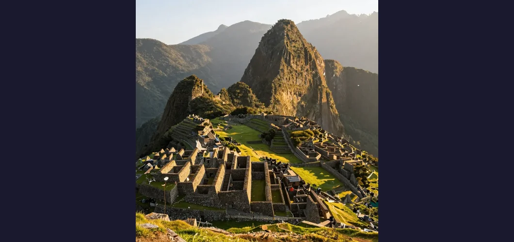

Machu Picchu: The Lost Citadel of the Incas That Was Never Really Lost

It is the morning of July 24, 1911, in the Peruvian Andes. A 35-year-old Yale lecturer named Hiram Bingham III climbs a steep, muddy slope. A local farmer has promised to show him some ruins on the ridge above.
Bingham was not looking for a lost city. He was searching for Vitcos, the last capital of the Neo-Inca resistance. Then a melon farmer named Melchor Arteaga told him about some old stone walls on a nearby peak.
What Bingham saw from the top of the ridge would change his life. It would also change how the world understood the Inca Empire. He saw a whole city of granite blocks, wonderfully well preserved. It lay across a narrow saddle between two peaks, 2,430 meters (7,970 feet) above sea level. The Urubamba River roared through the gorge 600 meters below.
Bingham later claimed that he had “discovered” Machu Picchu. In truth, the site was never really lost. Farmers who spoke Quechua, the Inca language, had lived among the ruins for generations. They grew crops on the old terraces and let their animals graze in the stone plazas.
Several explorers had visited before Bingham. Maps from the late 19th century marked the place. What Bingham did was show Machu Picchu to the world. In 1912 he led a large expedition paid for by National Geographic. It dug up thousands of objects and photographed the site for an amazed public.
More than a century later, Machu Picchu draws over 1.5 million visitors a year. It is one of the New Seven Wonders of the World. Yet big questions about the citadel have no answer.
Why was it built on a nearly unreachable mountain ridge? What was it really for? And why was it left empty after barely a century, to be swallowed by cloud forest? The Spanish conquistadors destroyed every other major Inca city, but not this one.
Machu Picchu was built around 1450 CE. At that time Pachacuti Inca Yupanqui ruled (1438–1471). He was the ninth Sapa Inca, or emperor. He did more than anyone to turn the Inca from a regional kingdom into the largest empire in pre-Columbian America. Pre-Columbian means before Columbus arrived.
The name Pachacuti means “Earth-Shaker” in Quechua, and his reign matched the name. He conquered huge lands and reorganized how the empire was run. He ordered some of the boldest building projects in Andean history. They included rebuilding Cusco and building the fortress of Sacsayhuamán.
Most archaeologists think Machu Picchu was a royal estate. It would have been a country palace. The emperor and his court could go there to leave the capital for religious ceremonies, to watch the stars, and to rest in each season. The remote spot, the dramatic setting, and the grand religious buildings all fit this idea.
But the estate idea does not explain everything. Some features look more like a sacred sanctuary or an observatory than a pleasure palace. Some researchers think the place had several uses at once.
The citadel has about 200 buildings. They stand on broad terraces that run side by side around a huge central square. The buildings are made of granite blocks cut so exactly that they fit without mortar. Not even a knife blade can slip between them. This style is called ashlar masonry, and it marks the best Inca building.
The site has two main parts. One is the farming sector, with its spectacular terraces that step down the mountainside. The other is the urban sector, with temples, homes, workshops, and storehouses.
The urban sector is split again into the Hanan (upper) and Hurin (lower) districts. This two-part plan copied the Inca capital at Cusco.
Three buildings stand out. The Intihuatana stone is a carved granite pillar. It worked as a solar clock and a tool for watching the sky. It was lined up to mark the equinoxes and solstices. These are the days when day and night are equal, and the longest and shortest days of the year.
The Temple of the Sun is a half-round tower built around a huge natural rock. Its windows line up with the sunrise at the June solstice. The Room of the Three Windows has openings in the shape of a trapezoid. They frame views of the mountains around. This may have had a meaning in the Inca view of the cosmos.
The engineering needed to build here is almost as amazing as the buildings. The site sits on a ridge between two peaks. It is in one of the most earthquake-prone and unstable regions on Earth. Heavy rain, nearly 2,000 mm a year, threatens to wash everything down the mountain.
Inca engineers solved these problems with great skill. They built a large drainage system under the whole site. They layered crushed rock and soil to make a firm foundation that drains well.
The terraces were not only for farming. They were also huge retaining walls that held the slope in place and stopped landslides. The stone buildings had slightly leaning walls and trapezoid doors and windows. This made them very strong against earthquakes. Machu Picchu has survived over 550 years of earthquakes with little damage.
The site also had a clever water system. Fresh spring water ran from the mountain above through stone-lined channels and fountains. It flowed down through the urban sector and gave hundreds of people a steady supply.
At its busiest, an estimated 750 to 1,000 people lived at Machu Picchu. Most were support staff, craftspeople, and religious specialists who served the royal court. Bones found in Bingham’s digs suggest a mixed population from many parts of the empire. That fits the idea of an imperial center that drew people from all over the Tawantinsuyu. This was the Inca name for their empire in Quechua.
The terraces grew maize, potatoes, and other crops. These were enough to feed the people who lived there. More supplies could come up from the valley below along the well-kept Inca road network.
One of the biggest mysteries is why it was abandoned. People lived there for less than a century, from about 1450 to about 1530. Then they left, and the cloud forest crept in. The timing matches the Spanish conquest of the Inca Empire. That began in 1532, when Francisco Pizarro captured the Inca emperor Atahualpa at Cajamarca.
Yet there is no evidence that the Spanish ever reached Machu Picchu. Cusco was sacked and rebuilt. The other major Inca cities were destroyed one by one. Machu Picchu shows no sign of battle, burning, or deliberate wreckage.
The most likely answer is that the site was quietly left as the empire fell apart around it. The people may have fled to join the Neo-Inca resistance at Vilcabamba. They may have gone back to their home provinces. Or they may have died of the European diseases that swept through the Andes after the first contact.
Smallpox, in particular, may have hit the people of Machu Picchu even before the Spanish came in force. In some areas it killed up to 90 percent of the native people. That would have broken the social and economic systems that kept such remote outposts alive.
When Hiram Bingham arrived in 1911, plants had mostly taken over the site, but the buildings were still sound. Four Quechua families lived among the ruins. They farmed the terraces as their ancestors had.
Bingham’s story of his “discovery” was shaped by the ideas of his time. Back then, European and American explorers often said they had “found” places that local people had always known. Bingham took objects from the site, including human remains, pottery, and metalwork. They went to Yale University. They stayed for nearly a century. In 2011, after a long legal dispute, they were sent back to Peru.
People saw this return as a landmark in giving back cultural heritage that had been taken during colonial times. The objects are now kept at the Casa Concha museum in Cusco. Bingham became a professor, a United States Senator, and one of the most famous explorers of the twentieth century. But his legacy is mixed. It includes real scientific achievement and also the colonial attitudes that shaped his work.
Today Machu Picchu faces new problems. Huge numbers of visitors strain the fragile stone buildings and the land around. Before the pandemic there were over 1.5 million a year. The numbers have since recovered.
The Peruvian government set up a ticket system with timed entry and a daily limit on visitors. Even so, erosion, worn stone paths, and damage to the terraces are serious worries. Climate change is also a threat. Rainfall patterns are shifting and temperatures are rising. That endangers both the ruins and the cloud forest around them.
Still, Machu Picchu remains one of the most inspiring archaeological sites on Earth. It shows the vision, engineering, and spiritual dreams of a people. They built one of the greatest cities in human history on a remote mountain ridge. The conquistadors who destroyed those builders never even knew it was there. So why did the Inca build it, and why did they leave?
References & Further Reading
Britannica: Machu Picchu — History, description, and significance of the Inca citadel
World History Encyclopedia: Machu Picchu — Detailed analysis by Mark Cartwright
History.com: Machu Picchu — Peru, Elevation & Facts
History.com: This Day in History — Machu Picchu Discovered (July 24, 1911)
History.com: The Engineering Secret Behind Machu Picchu’s Stonework
Wikipedia: Hiram Bingham III — Biography of the explorer who brought Machu Picchu to world attention
📚 Recommended Reading: The Last Days of the Incas by Kim MacQuarrie (on Amazon) — As an Amazon Associate, we earn from qualifying purchases.
Editorial note: reconstructions are continuously revised as imaging and inscription studies improve. See our Editorial Policy.